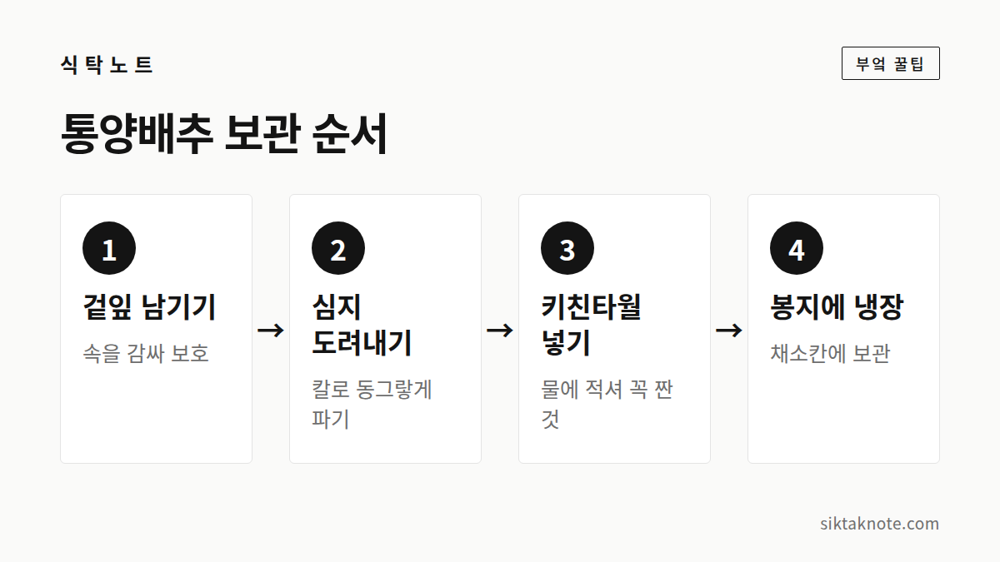
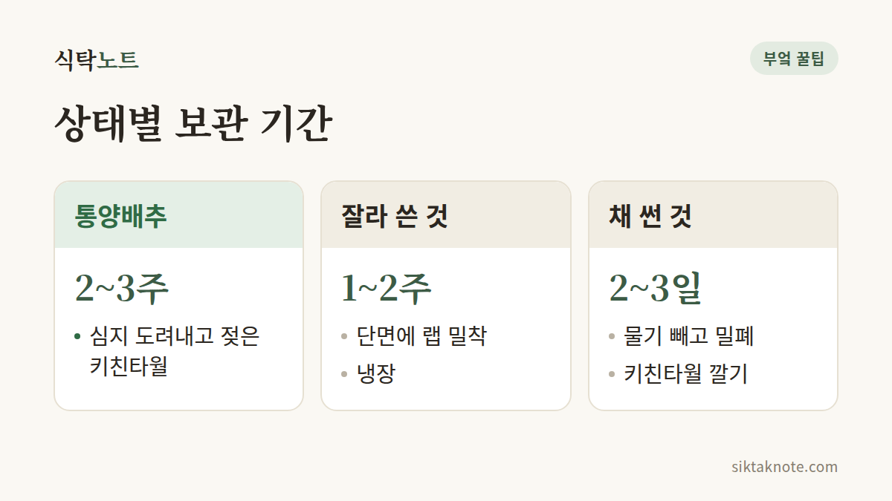

양배추 오래 보관하는 법 — 통양배추와 잘라 쓴 양배추

3줄 요약
- 통양배추는 심지를 도려내고 젖은 키친타월을 채워 비닐에 담아 냉장해요.
- 잘라 쓴 양배추는 단면에 랩을 딱 붙여 냉장하고 1~2주 안에 먹어요.
- 곰팡이가 피었거나 속이 물러 즙이 나온다면 버려 주세요.

통양배추는 심지부터 도려내요
한 통 사 두면 한참을 먹어도 줄지 않는 게 양배추라, 보관법이 은근히 중요하죠. 순서는 이래요.
- 겉잎은 한두 장 남겨 두고, 그 안쪽에 상처가 있거나 시든 잎이 있으면 떼어내요. 겉잎이 속을 보호해 주거든요.
- 밑동의 심지를 칼로 동그랗게 도려내요. 심지가 계속 수분과 영양분을 끌어가서 속이 빨리 시든다고 알려져 있어요.
- 파낸 자리에 물에 적셔 꼭 짠 키친타월을 채워 넣어요.
- 비닐봉지에 넣어 냉장고 채소칸에 두면 2~3주 정도 두고 먹을 수 있어요.

자르고 남은 양배추는 단면을 덮어 주세요
잘라 쓰고 남은 양배추는 단면이 마르지 않게 랩을 밀착해서 감싸거나, 키친타월을 대고 지퍼백에 넣어 냉장해요. 단면이 말랐다면 먹기 전에 얇게 잘라내면 되고, 1~2주 안에 쓰는 게 좋아요.
채 썬 양배추는 좀 더 까다로워요. 찬물에 5분 담갔다가 체에 밭쳐 물기를 충분히 빼 주세요. 그다음 밀폐 용기에 키친타월을 깔고 담아 냉장하고, 2~3일 안에 먹어요. 물기가 남아 있으면 금방 물러지거든요.

냉동할 땐 볶음·국·찌개용으로
양배추는 얼리면 식감이 흐물해져서 샐러드로는 아쉽지만, 볶음, 국, 찌개, 전에 쓰기엔 괜찮아요.
- 먹기 좋게 썰어 끓는 물에 1~2분 데쳐요.
- 찬물에 헹궈 물기를 꼭 짜고 소분해요.
- 지퍼백에 납작하게 담아 얼리면 한 달 정도 괜찮아요.
심지와 단면만 잘 지키면 돼요
양배추는 수분이 많고 잎이 겹겹이라 속은 오래 가요. 하지만 밑동 심지와 잘린 단면은 공기에 닿으면 빨리 마르고 변하거든요. 그래서 심지를 도려내고 단면을 덮어 주는 게 보관의 핵심이에요.
이럴 땐 조심하세요
잎 사이에 검은 반점이 보이면 그 잎만 떼어내고 깨끗한 속잎을 쓰면 돼요. 곰팡이가 피었거나, 속이 물러 즙이 흐르고 시큼한 냄새가 난다면 버리세요. 그리고 잘라 쓴 양배추를 칼로 다시 썰 때는 칼과 도마를 깨끗이 씻어서 쓰세요.
양배추는 심지와 단면, 두 군데만 잘 돌봐 주면 오래도록 든든한 반찬 재료가 돼 줘요.